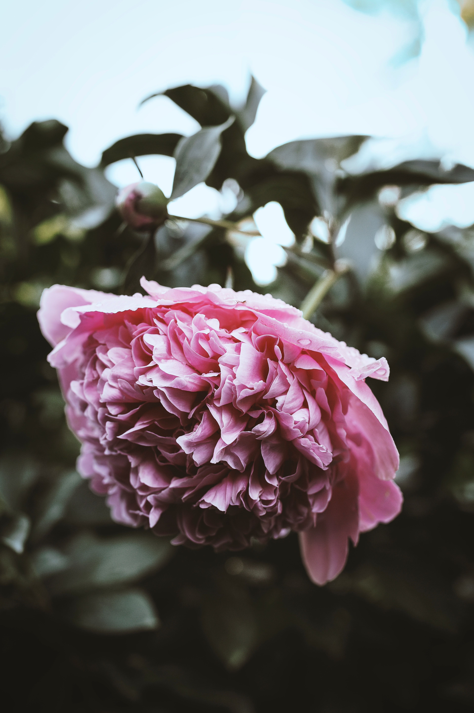

Tanaman hias bunga
Bunga mawar
Bunga ini salah satu jenis tanaman hias yang sangat popular. Warnanya yang beraneka ragam membuat bunga ini sangat digemari untuk dijadikan tanaman hias. Bunga mawar juga sering dijadikan sebagai lambang perasaan sayang kepada seorang kekasih. Klik disini untuk melihat aneka produk bunga mawar yang kami jual.
HARGA : Rp 16.000/Pohon
HARGA : Rp 35.000 Bibit
Keladi Red Star (Caladium Bicolor)
Tanaman ini termasuk tanaman yang mudah ditanam, tanaman keladi cepat berkembang asal media tanamnya tetap dijaga lembab, namun sebaiknya diletakkan di tempat yang terkena sinar matahari penuh, agar warna merah pada urat daunnya menguat.
HARGA : Rp 39.600/tanaman
HARGA : Rp 50.000 Bibit

Tanaman hias gantung
Tanaman Lantana
Tanaman ini terbilang cukup mudah untuk tumbuh. Lantana juga bisa lebih melambai, meskipun dengan sedikit kandungan air. Warna bunganya lebih cerah, sehingga area di sekitarnya menjadi begitu berwarna, baik ketika musim panas maupun musim dingin. Bunga lantana mirip dengan Verbena ini banyak dipuji karena waktu mekarnya yang cukup panjang. Tinggi bunga ini bisa mencapai 6 inchi atau sekitar 15 cm. Warna macam-macam. Ada oranye, kuning, ungu, merah dan putih.
HARGA : Rp 20.000/Tanaman
HARGA : Rp 15.000 Bibit
Tanaman hias bunga
Bunga Kertas atau Bougenville
Bunga yang sangat mudah ditanam dan juga memiliki banyak warna. Bunga kertas digemari karena tidak sulit untuk merawatnya dan proses pertumbuhannya tergolong cepat. Kebanyakan orang sering melakukan penyetekan pada bunga ini, ada juga yang mencoba melakukan penyilangan untuk mendapatkan warna bunga yang unik.
HARGA : Rp 25.000/Tanaman
HARGA : Rp 45.000 Bibit

Tanaman hias daun
Aglaonema atau Sri Rejeki
Tanaman ini memiliki ciri-ciri berdaun lonjong hijau, dihiasi bintik-bintik, garis, atau ban berwarna abu-abu keperakan. Sri rejeki ini mudah ditanaman tanpa perawatan intensif, tapi membutuhkan cahaya yang tidak langsung dan lingkungan yang lembab. Akan tetapi Anda perlu hati-hati bila ruangan terlalu panas dan kering di musim kemarau, daun Sri Rejeki mudah layu dan harus dibuang. Tanaman ini juga tidak tahan terhadap uap air dari dapur dan asap rokok.
HARGA : Rp 300.000/Pot Tanaman
HARGA : Rp 300.000 Bibit
Tanaman hias gantung
Tanaman Begonia
Tanaman ini sebenarnya untuk daerah tropis dan subtropis, namun begonia juga bisa tumbuh dengan keadaan lingkungan yang sedikit berbeda. Tanaman begonia tergolong mudah untuk dirawat, begonia mudah berbunga serta membuat kebun terlihat penuh dan utuh. Bentuk tanamannya mirip dengan mawar, dan bisa tumbuh tinggi dari 6 sampai 9 inchi. Varietas dan pilihan warnanya banyak. Lebih dari 10.000. Perawatannya juga cenderung mudah.
HARGA : Rp 30.000/Tanaman
HARGA : Rp 42.750 Bibit